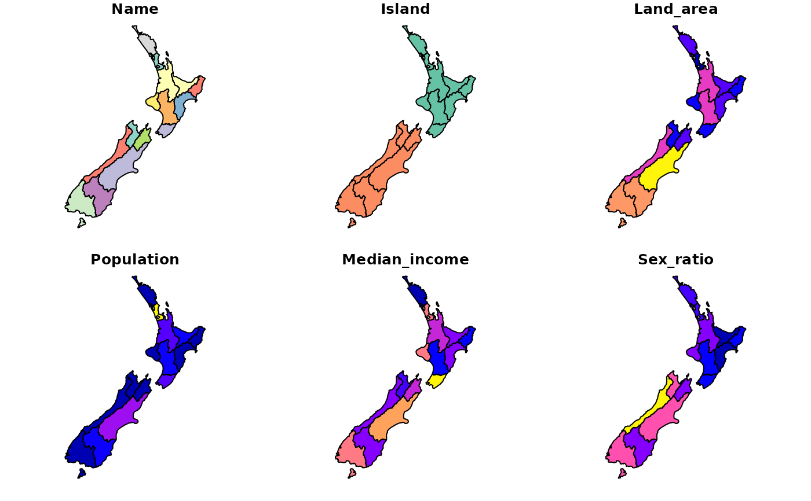

Polygons representing the 16 regions of New Zealand (2018). See https://en.wikipedia.org/wiki/Regions_of_New_Zealand for a description of these regions and https://www.stats.govt.nz for information on the data source
nzFORMAT:
Name Name
Island Island
Land_area Land area
Population Population
Median_income Median income (NZD)
Sex_ratio Sex ratio (male/female)
geom sfc_MULTIPOLYGON
See the nzcensus package: https://github.com/ellisp/nzelect
if (requireNamespace("sf", quietly = TRUE)) {
library(sf)
summary(nz)
plot(nz)
}

if (FALSE) {
# Find "Regional Council 2018 Clipped (generalised)"
# select the GeoPackage option in the "Vectors/tables" dropdown
# at https://datafinder.stats.govt.nz/data/ (requires registration)
# Save the result as:
unzip("statsnzregional-council-2018-clipped-generalised-GPKG.zip")
library(sf)
library(tidyverse)
nz_full = st_read("regional-council-2018-clipped-generalised.gpkg")
print(object.size(nz_full), units = "Kb") # 14407.2 Kb
nz = rmapshaper::ms_simplify(nz_full, keep = 0.001, sys = TRUE)
print(object.size(nz), units = "Kb") # 39.9 Kb
names(nz)
nz$REGC2018_V1_00_NAME
nz = filter(nz, REGC2018_V1_00_NAME != "Area Outside Region") %>%
select(Name = REGC2018_V1_00_NAME, `Land_area` = LAND_AREA_SQ_KM)
# regions basic info
# devtools::install_github("hadley/rvest")
library(rvest)
doc = read_html("https://en.wikipedia.org/wiki/Regions_of_New_Zealand") %>%
html_nodes("div table")
tab = doc[[3]] %>% html_table()
tab = tab %>% select(Name = Region, Population = `Population[20]`, Island)
tab = tab %>% mutate(Population = str_replace_all(Population, ",", "")) %>%
mutate(Population = as.numeric(Population)) %>%
mutate(Name = str_remove_all(Name, " \\([1-9]\\)?.+"))
nz$Name = as.character(nz$Name)
nz$Name = str_remove(nz$Name, " Region")
nz$Name %in% tab$Name
# regions additional info
library(nzcensus)
nz_add_data = REGC2013 %>%
select(Name = REGC2013_N, Median_income = MedianIncome2013,
PropFemale2013, PropMale2013) %>%
mutate(Sex_ratio = PropMale2013 / PropFemale2013) %>%
mutate(Name = gsub(" Region", "", Name)) %>%
select(Name, Median_income, Sex_ratio)
# data join
nz = left_join(nz, tab, by = "Name") %>%
left_join(nz_add_data, by = "Name") %>%
select(Name, Island, Land_area, Population, Median_income, Sex_ratio)
}